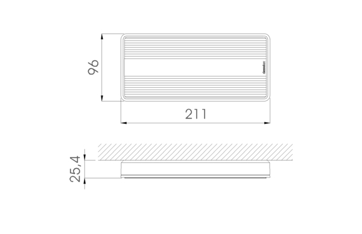
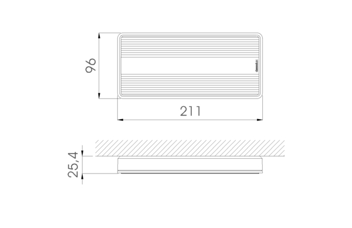

Su mínimo volumen, especialmente su bajo grosor, junto con la posibilidad de elegir diferentes accesorios de montaje y señalización facilita su uso tanto en techo como en pared. El uso de tecnología MCRLED en sus diferentes conjuntos ópticos mejora la eficiencia del sistema asegurando el equilibrio entre el número de luminarias utilizadas y una excelente iluminación.
 
